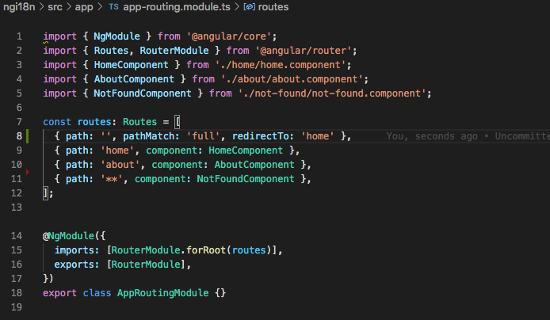
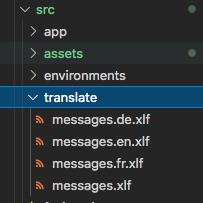
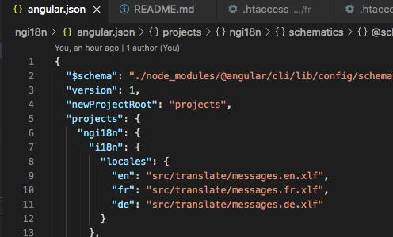
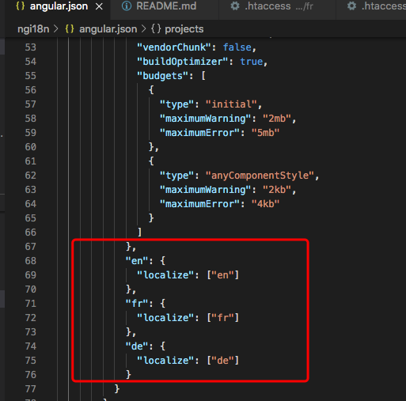
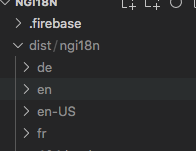
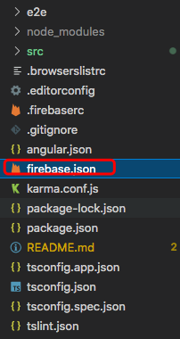
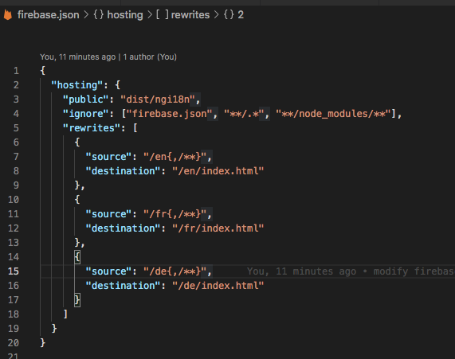

How to Deploy A Routed Multilingual(i18n) Angular 10 to Firebase
ngi18n is project name ng new ngi18n --routing
cd ngi18n
configure routing as normal

ng add @angular/localize
set i18n attribute, e.g.<h1 i18n>Welcome</h1 i18n>
run the following command in CLI to create a translation source
file ng extract-i18n --output-path src/translate
copy and translate the file, messages.xlf to messages.en.xlf and
messages.fr.xls etc.

configure angular.json


in developing environment, to test the functions in french
ng serve --configuration=fr
npm install -g firebase-tools
firebase login
firebase init. Please answer "N" to all questions
ng build --prod --localize

Configure firebase.json . Very important!! If skip this step, refresh
url will cause a 404 error. For more details, please refer to
firebase manuel

